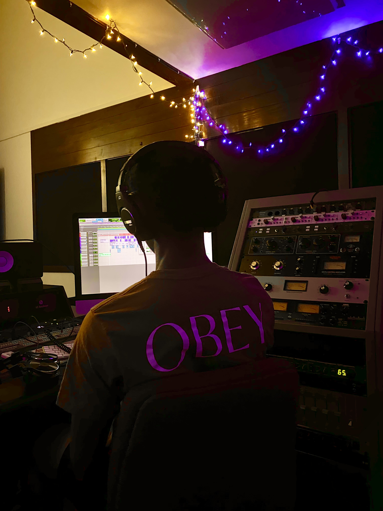

Music
A focus on alternative hip-hop and R&B demos where I experiment with melody, vocal tone, and arrangement. These tracks are my main way of developing as an artist.
A focus on alternative hip-hop and R&B demos where I experiment with melody, vocal tone, and arrangement. These tracks are my main way of developing as an artist.
Simple branding ideas and visuals built around how I want to present my work online. This includes basic promo concepts, layouts, and ways to talk about my projects.
Projects where I think about visuals, pacing, and mood, especially for video. I use directing to connect what people see with what they hear in my music.